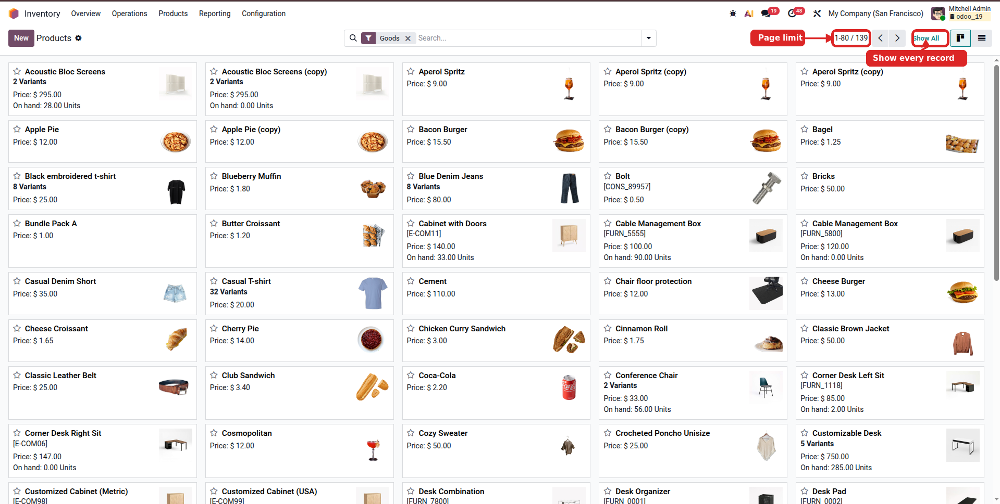
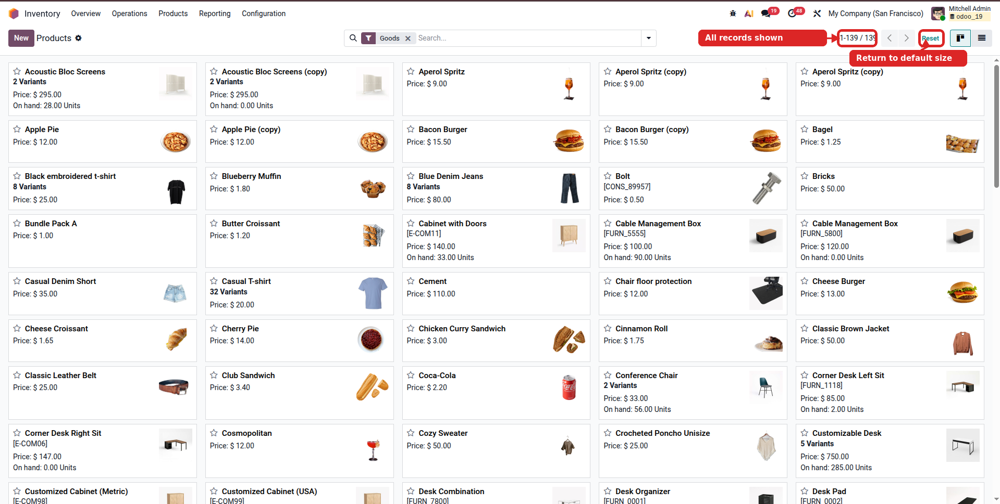

Odoo normally splits long views into pages. This module adds clean Show All and Reset actions beside the native pager, so users can scan a complete list, kanban board, One2Many table, or Many2Many field without jumping page by page.
Load every record from the current pager on one screen.
Return instantly to the original Odoo page size.
Install once and use it across supported pagers.
Works in standard backend list and kanban views.
Useful for long One2Many and Many2Many records inside forms.
When Odoo shows 80+, the module reads the exact total before loading all records.
Install the module from Apps.
Go to any paged list or kanban view.
Click Show All beside the pager.
Use Reset to restore the default pager.


The module only improves the pager experience. It does not change business records, security rules, workflows, reports, or model logic.